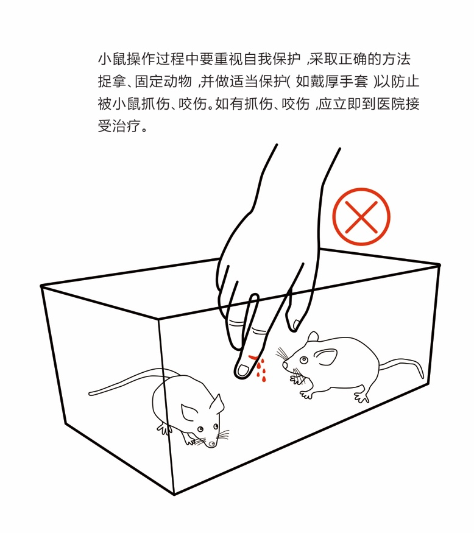
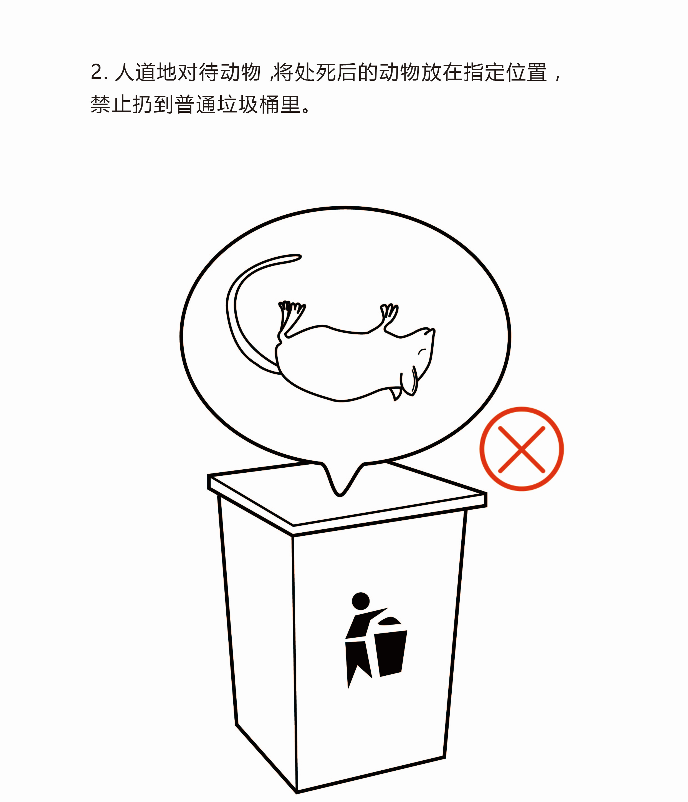
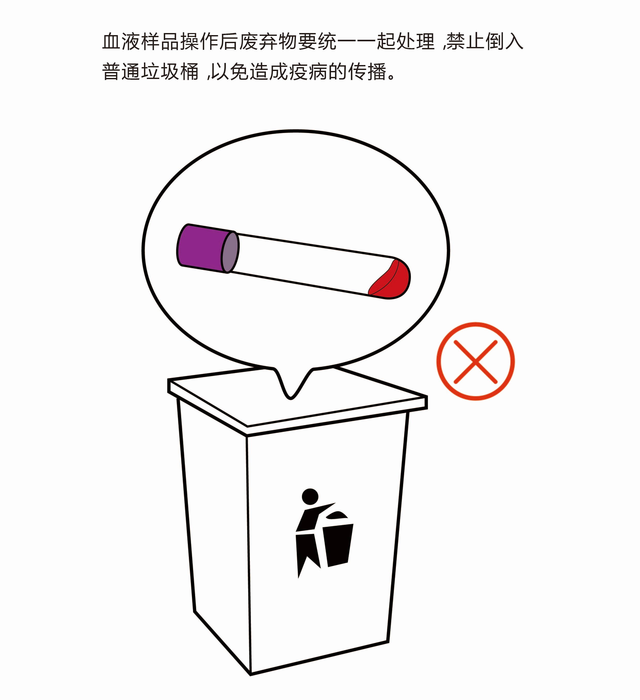
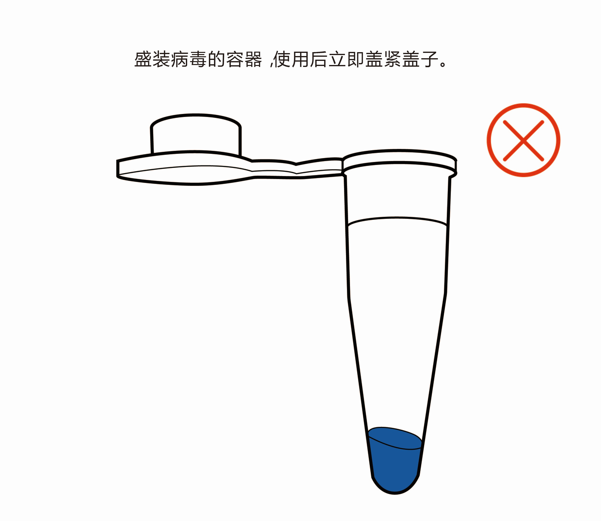

第四章 生物材料存储及操作规范
生物材料大致可分为以下几种：实验动物材料、人与动物血液组织材料、微生物材料、生物大分子材料等。
（一） 实验动物材料
生物科学研究的进展往往依赖于使用动物模型作为实验假说和临床假说二者的实验基础，人类各种疾病的发生发展是十分复杂的，要深入探讨其疾病的发病机理及疗效机理是不能直接在病人身上进行，这时我们就可以通过使用动物模型来对各种疾病及生命现象进行研究，进而推用到人类。使用动物模型是现代生物医学研究中一个极为重要的研究方法及手段，有助于更方便、更有效地认识人类疾病的发生、发展规律和研究防治措施。常用的实验动物材料有猴、狗、兔子、大小鼠、斑马鱼、果蝇、线虫等。使用模式动物进行生物学实验要取得伦理委员会审批资证，为了加强实验室生物安全管理，保障师生员工人身和环境安全，需遵守实验动物材料的使用和操作规范。下面以几个常见模式动物为例，介绍模式动物从购买、饲养维护、规范操作等一系列安全操作规范。
1. 兔子
1) 购买
实验用兔须来自具有《实验动物生产许可证》的单位，并附有动物质量合格证明书，如武汉大学动物实验中心、广东省医学实验动物中心、北京维通利华等；
购买实验用兔最好选择常用的品系，如新西兰白兔。
2) 饲养维护
l 为使实验兔达到相对应的等级标准，应采用全价颗粒饲料，全价颗粒饲料营养丰富全面，饲料中不添加抗菌素、防腐剂和激素；
l 要保障供给足够的清洁饮水，饲喂含水量较高的新鲜的蔬菜，并控制饲喂量；
l 兔子喜静，切不可将兔子饲养在嘈杂的环境中，要保持饲养环境的干净卫生。
3) 规范操作
l 兔子的抓取：兔子胆小易惊，从笼内提兔时，轻轻打开笼门，将手伸入笼内，从头前阻拦它跑动，将兔耳放入右掌心内，右手抓兔颈的皮毛将其提起，左手拖住臀部或腹部，让体重的大部分集中的左手上；若操作过程中不慎被抓伤，立即到医院接种相关疫苗；
l 兔子灌胃：将兔子固定后，一手按住头部，另一手将开口器开口，舌头压在下面，将胃管经由小孔插入，沿咽后壁插入食管，遇到阻力即可停止。然后将导管放入有溶液的烧杯内，若无气泡产生则可进行灌胃；
l 兔耳缘静脉注射：兔耳中央为动脉，耳缘为静脉。两人配合操作，一人按住耳根阻止静脉回流使耳缘静脉充盈。另一人进行静脉注射，绷紧皮肤，消毒后，持头皮针从静脉远端进针，回抽有血，固定针头，缓慢推入药液，拔针，压迫数分钟止血。
4) 其它注意事项
l 防止被动物咬伤、抓伤，受伤后清水冲洗碘伏消毒并及时去医院接种相关疫苗；
l 防止注射器等锐器刺伤，如是使用过的锐器，一定要立即去医院注射相关疫苗；
l 人道地对待动物，将处死后的动物放在指定位置，禁止扔到普通垃圾桶里，搞好实验室卫生。
2. 小鼠
1) 购买
1）、实验小鼠须来自具有《实验动物生产许可证》的单位，并附有动物质量合格证明书，如武汉大学实验动物研究中心、中国医学科学院实验动物研究所、广州赛业等；
2）、从国内其他单位引进的实验小鼠，必须附有饲养单位签发的质量合格证书，经隔离检疫合格后方可接收；
3）、从国外引进的实验小鼠，必须按照《中华人民共和国进境动植物检疫审批管理办法》的相关规定执行，不得从疫区引进动物。
2) 饲养维护
1）、从事SPF级（Specific pathogen Free, SPF）实验小鼠的饲养管理工作的饲养员必须经过有关专业培训，持证上岗；
SPF级实验动物：无特定病原体级实验动物，指机体内无特定的微生物和寄生虫存在的动物，但非特定的微生物和寄生虫是容许存在的。一般指无传染病的健康动物，空气洁净度要求一万级，是目前国外使用最广泛的实验动物。它的来源，既可来自无菌动物繁育的后裔，亦可经剖胎取后，在隔离屏障设施的环境中，由SPF亲代动物抚育。它不带有对人或动物本身致病的微生物，但不能排除可经胎盘屏障垂直传播的微生物。
2）、实验小鼠必须按照不同的品种、品系和不同的实验目的分开饲养，饲养过程中使用的饲料、垫料、笼器具、饮水等要符合国家标准及相关要求，小鼠饲养笼具的更换周期至少2次/周；
3）、饲养人员在工作中如发现有死亡动物时，应立即取出动物尸体并查明原因，用塑料袋包装，记录笼号、动物死亡数、日期，并更换该鼠笼、笼盖、饲料及饮水瓶；
4）、经常检查实验动物是否有异常行为。
3) 规范操作
l 根据不同的实验目的，选用相应的合格实验动物，不同品种或互有干扰的动物实验，不得在同一实验间进行；
l 实验动物操作过程中要重视自我保护，采取正确的方法捉拿、固定动物，并做适当保护（如戴厚手套）以防止倍小鼠抓伤、咬伤。如有抓伤、咬伤，应立即到医院接受治疗；
l 进行小鼠解剖实验时应配备相应的工作服、手套、帽、口罩等。不慎割破皮肤，应让血流出，流水冲洗，然后涂碘酊。如怀疑有感染，应采取相应措施，不能大意，避免不必要的伤害；
l 在符合科学原则的前提下，按照替代、减少和优化的原则进行动物实验设计，尽量减少动物使用量，减轻被处置动物的痛楚；
l 动物尸体及实验废弃物不得随意处理，以避免不必要的疾病传播。解剖后动物尸体放入指定冰箱统一处理。


4) 其它注意事项
l 、实验室应负责实验设施及环境的清洁卫生，严防疾病传入动物饲养设施，杜绝人兽共患病发生；
l 从事实验动物相关工作的人员要定时进行健康检查。
3. 线虫
1) 购买
线虫株系如无特别声明都是来自美国NIH Nation Center for Research Resources （NCRR）支持的Caenorhabditis Genetics Center （CGC, University of Minnesota, Minneapolis, MN）；
2) 饲养维护
l 线虫培养时选用大肠杆菌OP50作为其食物，在NGM培养基上生长培养；
l 挑取OP50单菌落于LB液体培养基中，37℃过夜振荡培养，制成菌悬液，吸取少量菌悬液涂布到NGM平板，培养24h；
l 用M9缓冲液清洗线虫，静置后去掉上清液，沉淀物接种到NGM培养基上，放于20摄氏度恒温培养箱中培养；
l 线虫的繁殖周期和 生命周期较短，从卵发育到成虫只有3.5d，寿命只有两到三周，性成熟的线虫能够产下300到350左右的幼虫，需要及时将线虫转移到新的培养板上；
l 线虫保存于30%甘油溶液（S缓冲液溶解）中，-80℃可保存较长时间
3) 规范操作
l 线虫生长的培养基上有OP50大肠杆菌，操作时要格外小心;
l 在操作过程中尽量少说话，放止污染培养基；
l 当族群拥挤或食物不足时，线虫会进入dauer幼虫期，dauer能对抗逆环境，而且不会老化；
l 线虫转板时需要注意在无菌的环境中操作，繁殖培养基染菌；
l 用挑虫工具转移线虫时，尽量不要戳破培养基，防止线虫钻进培养基；
l 温度对于线虫的生长和繁殖有很大的影响，在培养室需要尽量控制温度恒定；
4. 斑马鱼
1) 购买
购买要来源于正规公司，走合格的购买渠道；
2) 饲养维护
l 整理擦洗实验台，打扫实验室地面卫生，清理垃圾。
l 当天9:00、14:00和19:00分别用鱼粮（碾碎）、丰年虫，赤虫喂养斑马鱼，喂食之前用虹吸管吸走鱼缸内沉淀物，一般一周内清洗鱼缸一次。
l 检查培养箱内水盘中水是否足量，不足时要及时不加水。同是检查室内温度是否是设定的温度。
l 在值日记录上标记、签名。
l 每周更换一次循环水，清洗鱼缸一次。
（二）人与动物血液组织样本
血液不断地在全身流动，参与机体的各种功能活动，对动物的新陈代谢以及维持内环境和保持与外界环境间的平衡起着重要的作用。当血液发生病理变化时，常常会影响全身的组织和器官_而组织和器官的病变又可以引起血液成分的变化。因此，血液的检验在疾病的诊断中起到十分重要的作用。血液样本的采集、制备与保存是重要的前期工作，是保证正确诊断的基本条件。由于血液样本大多与疾病相关，为了自身及他人的健康，因此在进行相关操作时要严格遵守相关的操作规定。下面以血液样本为例介绍其规范操作。
（1） 来源
人血液组织样品材料的获取要按照《血液制品管理条例》相关规定执行，相关的医院或机构要具有《单采血浆许可证》；
动物血液组织样品材料的获取也要按照《血液制品管理条例》相关规定执行。
（2） 运输、储存及保管
l 分离到的血清与血浆样品保存于密闭试管中存放于4℃或冷冻冰箱内；
l 全血样品应保存于4℃冰箱内，检验时样品必须达到室温，达到室温之后颠倒数次，使血液充分混匀后方可检验；
l 如果样品能在24小时内送往实验室_可保存于4℃环境的保温箱内，如果24小时内不能抵达或有些样品送往外地实验室时，样品必须冷冻处理后_并在低温下运送；
l 运送途中防止样品泄漏，密闭封装并加冰袋运送。同时要填写详细的样品记录。
（3） 规范操作
l 动物采血时要佩戴相应的实验服、手套、口罩等，严格遵守有关消毒防疫等规定，不慎划伤自己时，应让血流出，流水冲洗，然后涂碘酊，最后及时到相关医院检查，切不可大意；
l 血液样品操作后废弃物要统一一起处理，禁止倒入普通垃圾桶，以免造成疫病的传播；

（4） 其它注意事项：
l 实验室应负责实验设施及环境的清洁卫生；
l 从事相关工作的人员要定时进行健康检查。
（三）微生物
国家根据微生物的传染性、感染后对个体或者群体的危害程度，将微生物材料分为四类：
（1） 第一类微生物，是指能够引起人类或者动物非常严重疾病的微生物，以及我国尚未发现或者已经宣布灭绝的微生物；
（2） 第二类微生物，是指能够引起人类或者动物严重疾病，比较容易直接或者间接在人与人、动物与人、动物与动物间传播的微生物；
（3） 第三类微生物，是指能够引起人类或者动物疾病，但一般情况下对人、动物或者环境不构成严重危害，传播风险有限，实验室感染后很少引起严重疾病，并且具备有效治疗和预防措施的微生物；
（4） 第四类微生物，是指在通常情况下不会引起人类或者动物疾病的微生物；
1) 购买
l 涉及第一类、第二类病原微生物的样本，实验室应填写《华中科技大学生物样本申请审 批表》，经院（系）安全管理员和分管领导审核，实验室与设备管理处审批后，方可依照国家相关法法规和学校相关采购规定实施引进；
l 涉及第三类病原微生物样本，实验室应填写《华中科技大学生物样本申请审批表》，经院（系）安全管理员和分管领导审核，方可依照国家相关法律法规和学校相关采购规定实施引进；
l 涉及第四类病原微生物样本，实验室可依照国家相关法律法规和学校相关采购规定实施引进。
2) 储存及保管
l 建立档案制度，做好病原微生物样本的储存、领用、销毁的记录；
l 对第一类、第二类病原微生物样本应设专库或者专柜单独储存，领用时要做严格登记；
l 实验室应采取有效的安全保卫措施，严防病原微生物样本被盗、丢失或泄漏。
3) 规范操作
l 从事第一类、第二类病原微生物相关实验活动应有两名以上的工作人员共同进行，并做好使用记录；
l 相关实验结束后，应当依照相关规定，及时将病原微生物样本就地销毁或送交上级保管单位保管；
l 涉及病原微生物实验的废弃物，必须进行无害处理，并按相关规定包装、暂存，由学校集中处理。
4) 实例
大肠杆菌属于第四类微生物，它是研究微生物遗传的重要材料，大肠杆菌为埃希氏菌属代表菌。一般多不致病，为人和动物肠道中的常居菌，在一定条件下可引起肠道外感染。某些血清型菌株的致病性强，引起腹泻，统称致病性大肠杆菌。虽然绝大多数大肠杆菌与人类有着良好合作，但是仍有少部分特殊类型的大肠杆菌具有相当强的毒力，一旦感染，将造成严重疫情。所以实验操作过程中要戴手套、口罩，避免产生溅出，若有菌源溅出或溢出，都应使用对病源有效的消毒剂进行台面消毒。实验结束后要立即用肥皂或清水洗手。操作致病性大肠杆菌后，废液要统一处理，不能倒入普通水池，以免污染水体。不同的菌种要分类保存。
病毒属于第一类微生物，由一种核酸分子与蛋白质构成或仅由蛋白质构成。病毒个体微小，结构简单。病毒没有细胞结构，由于没有实现新陈代谢所必需的基本系统，所以病毒自身不能复制。但是当它接触到宿主细胞时，便脱去蛋白质外套，它的核酸侵入宿主细胞内，借助后者的复制系统，按照病毒基因的指令复制新的病毒。以下是防范方法：
l 实验人员要接种针对专项病毒的疫苗；工作现场要常备基本消毒液，如甲醛和70%的酒精；
l 实验室内不允许吃喝东西，不能用实验室内的冰箱和柜橱存放食品和饮料；
l 盛装病毒的容器，使用后立即盖紧盖子；
l 所有实验污染物，如枪头、针头、注射器等要做明显的标记，不能和普通生物实验的废弃物一起处理，在洗涤和处理前都要高压消毒，无感染性的液体才允许倒入下水道；
l 不许拿着污染物或带着可能污染的手套到处走动，不允许将含病毒的液体倒入水池中；
l 实验台垃圾，包括一次性手套、隔离衣及围裙，均应当采用多孔负荷蒸汽灭菌器在134-137度高压灭菌18分钟一个循环，或3分钟六个循环，然后再焚烧；
l 与感染动物接触的人员要特别注意穿戴专用工作衣。装载感染动物的笼具在使用后要充分消毒。感染的动物尸体、组织、鸡胚等要放入焚化炉处理；
（三） 生物大分子材料
生物大分子材料常见的有蛋白质、核酸等。蛋白质是生命的物质基础，是有机大分子，是构成细胞的基本有机物，是生命活动的主要承担者。没有蛋白质就没有生命。可以说蛋白质对我们人类的生命来说很重要，但自然界中还存在着很多会对我们产生危害的一些蛋白质。如朊蛋白，蛋白质毒素等。在相关实验中若操作不当。很有可能会对自己及他人造成伤害。下面以朊蛋白为例子介绍相关的操作规范。
朊蛋白是可传播性海绵状脑病病原体，是既有传染性又缺乏核酸的非病毒致病因子，朊蛋白病是一组由变异朊蛋白引起可传递的神经系统变性疾病，它是一类具有传染性朊蛋白导致散发性中枢神经系统变性疾病。动物朊蛋白病包括羊瘙痒病、传染性水貂脑病、麋鹿和骡鹿慢性消耗病和牛海绵状脑病等。已知人类朊蛋白病主要有Creutzfeldt-Jakob病、Kuru病、Gerstmann-Straussler综合征、致死性家族性失眠症、无特征性病理改变的朊蛋白痴呆和朊蛋白痴呆伴痉挛性截瘫等。在操作已感染或或潜在感染的人或动物材料时，应谨慎注意防范。其防范措施有：
l 尽可能地使用一次性器具，在生物安全柜的工作台面使用一次性防护罩；用专用仪器设备，不与其它实验室公用仪器；
l 污染有朊蛋白的感染性废液应当用含20g/L有效氯的次氯酸钠处理一个小时来清除污染，用具也如此处理；
l 在处理完感染性实验材料和动物后，以及在离开实验室工作区域前，都必须洗手；
l 专门冰箱保存，严格做好登记。
